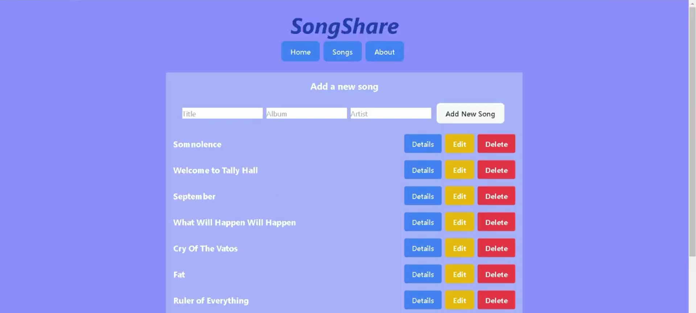

Ik moest tijdens programmeren 6 werken aan de front end én de back end, oftewel full stack. Eerst moest ik werken aan de back end met Postman. Daarna moest ik met aan de front end werken met React.
Voor deze opdracht moest ik een server aanvragen voor school, maar deze is al verlopen nadat ik klaar was met deze vak. Gelukkig moest ik voor mijn eindopdracht een video maken van de site, dus ik kan nog steeds zien hoe de site eruit zag.
